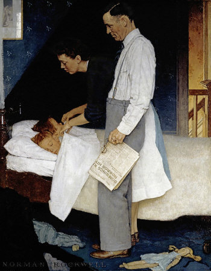

返回主页
Four Freedoms

引自Franklin Delano Roosevel(1941)
There are Four Freedoms.
Freedom of Speech
Freedom of Worship
Freedom from Want
Freedom from Fear
Roban Sphere
Retter2012 战略合作伙伴
美国正面管教协会（PDA） 注册认证讲师（(CPDPE)。
“快乐PD妈 家长课堂”，关注家庭教育的方方面面。
微信公众号：快乐PD妈（二维码）
Merkel deported 驱逐 a Palestinian girl (Free Migration), Regierung ohne Empathie. "Ich verstehe das ... Die politische Linie ist klar: Wer keine Chance auf Asyl (asylum) hat, soll Deutschland schnell wieder verlassen (leave). Geht Politik ohne Empathie? "
地�z谷野猿
Ender's Game, Wiggin, Genocide (Extinct) of Buggers
Harsey USN, Kill Japs, Kill Japs, Kill more Japs.
There’s No Justice in This World. Not Unless We Make It. Tyrion Imp Lannister
十字路口的读经村
毒害中国家长的四句话
油画：洛克威尔（NormanRockwell）四大自由。这系列画作启发于美国第32任总统罗斯福1941年1月6日所发表的致77届国会咨文
The Four Freedoms is a series of four 1943 oil paintings by the American artist Norman Rockwell. The paintings―Freedom of Speech, Freedom of Worship, Freedom from Want, and Freedom from Fear. Franklin Delano Roosevelt said in Jan.1941.
"In the future days, which we seek to make secure, we look forward to a world founded upon four essential human freedoms.
The first is freedom of speech and expression―everywhere in the world.
The second is freedom of every person to worship God in his own way―everywhere in the world.
The third is freedom from want―which, translated into world terms, means economic understandings which will secure to every nation a healthy peacetime life for its inhabitants―everywhere in the world.
The fourth is freedom from fear―which, translated into world terms, means a world-wide reduction of armaments to such a point and in such a thorough fashion that no nation will be in a position to commit an act of physical aggression against any neighbor―anywhere in the world.
That is no vision of a distant millennium. It is a definite basis for a kind of world attainable in our own time and generation. That kind of world is the very antithesis of the so-called new order of tyranny which the dictators seek to create with the crash of a bomb."
Retter is Better, WE Create and Deliver Real Value!
做党和人民满意的好老师
King's Speech
“去美国化”
“中国版门罗主义”
有些族裔更平等？
version:1.0; jobnet@188.com © retter2012.com